Colour with a purpose
Surface and foreground roles sit alongside primary, neutral, semantic and data palettes. Light and dark themes provide different values through the same colour API.

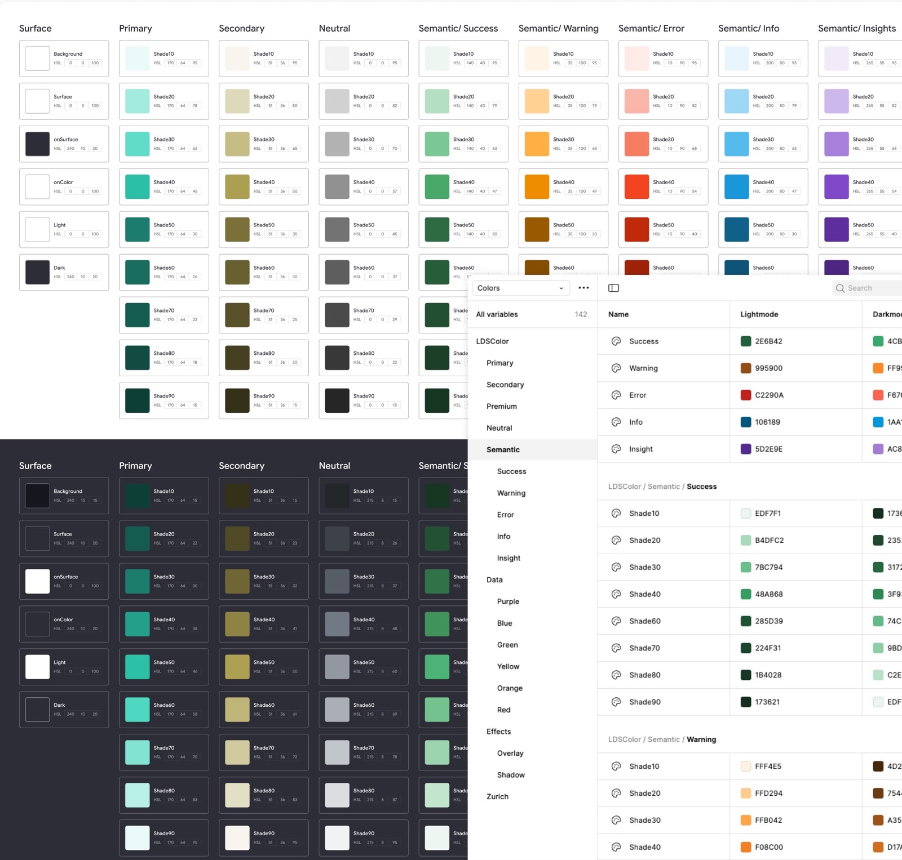
LiveWell by Zurich · Design + Flutter engineering
Building the LiveWell Design System from the ground up: shared visual foundations, reusable Flutter components and the tools to bring them into the product.
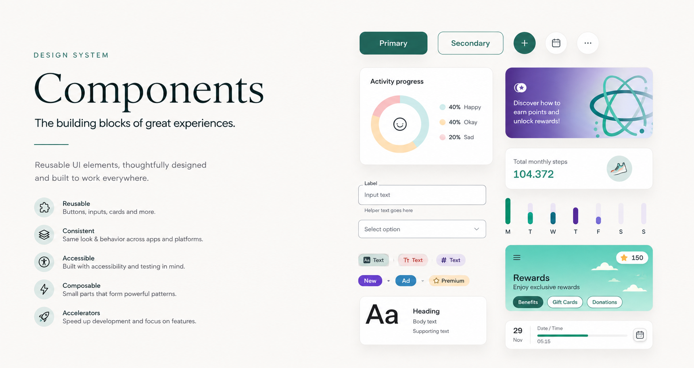
Context & role
As LiveWell evolved, the interface needed a more consistent foundation. Repeated UI decisions and individually styled components made it harder to keep the product coherent as new features were added.
I built the Design System from the beginning, working with a designer to define its foundations and component specifications. I was fully responsible for the Flutter library: its architecture, component implementation and technical conventions.
My work also included product features and the migration of existing screens. That kept the library grounded in the needs of the app, with feedback from implementation informing the system as it grew.
Foundations
Colour, typography, spacing, sizing, radius, elevation and iconography form the vocabulary of the system. Matching names in Figma and Flutter help keep implementation and design discussions connected.
Surface and foreground roles sit alongside primary, neutral, semantic and data palettes. Light and dark themes provide different values through the same colour API.

The type scale maps to Flutter’s text theme. Named spacing, size and radius values give components a consistent structure without repeating individual measurements throughout the app.
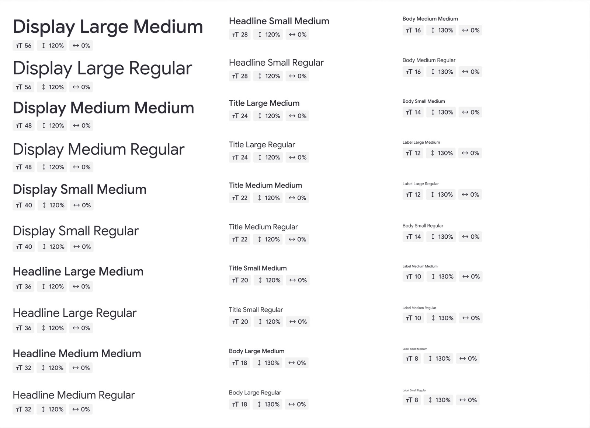
LDSSpacingLDSSizeLDSRadiusSpacing & sizes
Named spacing, size and radius values turn layout decisions into reusable rules. A shared pixel scale keeps the space within components and the relationships between sections consistent.
In Figma, named LDSSpacing variables are applied to Auto Layout padding and gaps. For
example, xs sets an 8 px gap. Flutter uses the corresponding LDSSpacing.xs
token.
xxxs2 pxxxs4 pxxs8 pxs12 pxm16 pxmp20 pxl24 pxxl32 pxxxl40 pxxxxl64 pxIn Figma, size variables set component widths and heights, and radius variables set corner rounding.
In Flutter, LDSSize.s24 sets a 24 px dimension, and LDSRadius.m applies the
same 16 px corner radius as LDSRadius/m in Figma.
Shared corner radii from LDSRadius. The layout guidance uses 16 px for cards and 32 px for
the main content container.
All measurements in this case study are shown in pixels (px), using design and Flutter layout values.
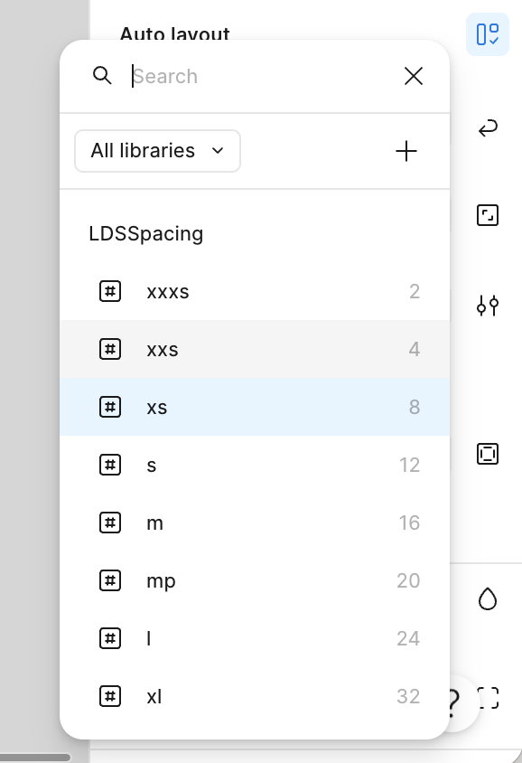
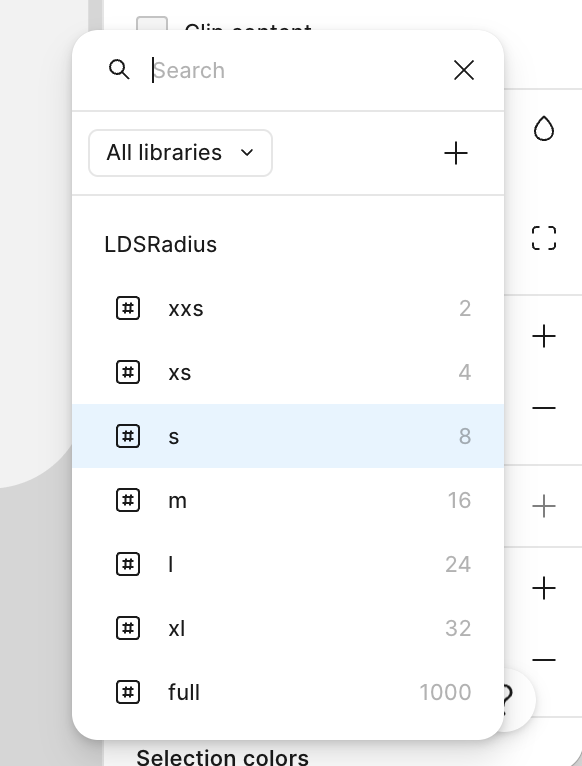
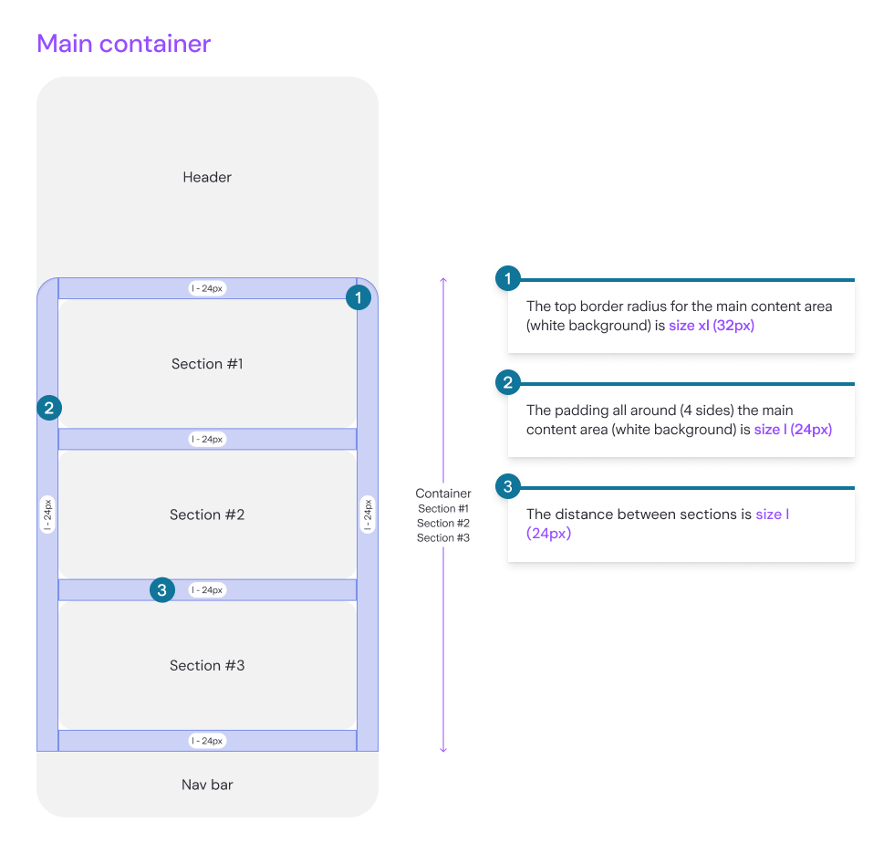
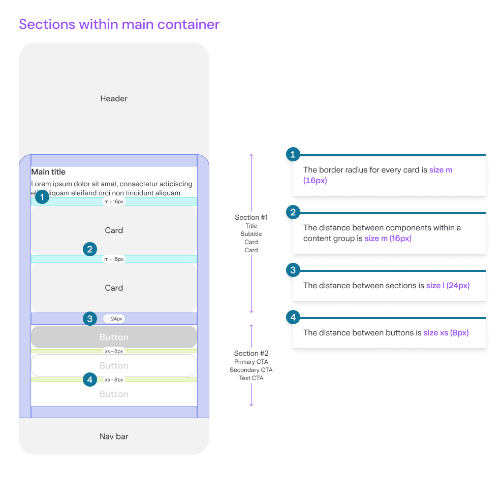
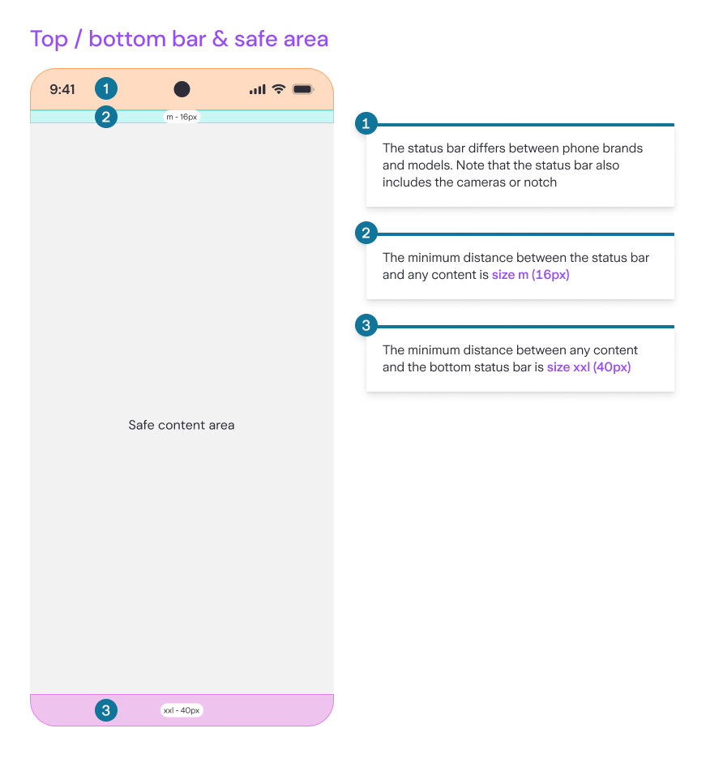
In Flutter: LDSSpacing, LDSSize and
LDSRadius expose the shared values to product code, keeping padding, component dimensions and
corner treatments aligned.
Iconography
The icon library covers navigation, health, activity and common interface actions. Shared geometry, size options and theme colours keep icons visually connected to the rest of the system.
Elevation & shadows
No shadow, top shadow and bottom shadow provide distinct surface treatments. Central definitions keep depth consistent across cards and other content surfaces.
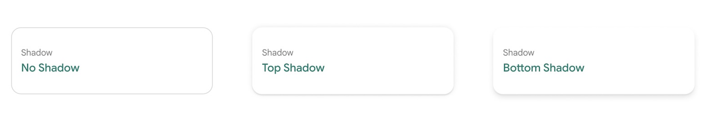
In Flutter: DesignSystemShadowsTheme defines
reusable BoxShadow lists. The top treatment combines 10 px and 2 px blur layers; the bottom
treatment uses the same blur values with vertical offsets of 5 px and 2 px.
Flutter architecture
I structured the system around a dedicated theme, named foundations and composable widgets. Product code consumes the system through a consistent API.
DesignSystemTheme.of(context) resolves the closest system theme. Light and dark palettes are
selected in the theme data, so components use shared colour roles.
The theme deliberately exposes a limited set of options for LiveWell. This keeps the API focused on one product while leaving a place for future component theming.
Theme access · Dart
final colors =
DesignSystemTheme.of(context).colors;
final surface = colors.surface;
final foreground = colors.onSurface;
final accent = colors.primary.shade20;
final error = colors.semantic.error;Component decisions
A component needs to describe how it behaves as well as how it looks. Explicit variants and states make those decisions reusable across product screens.
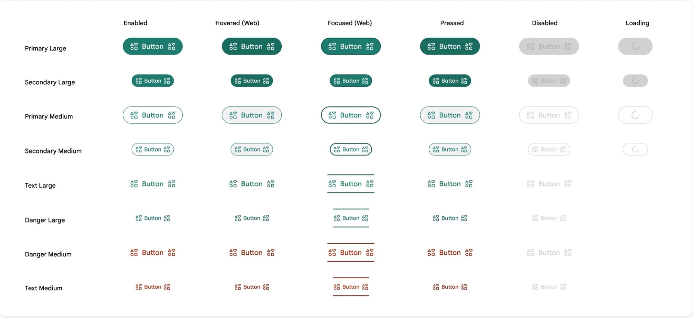
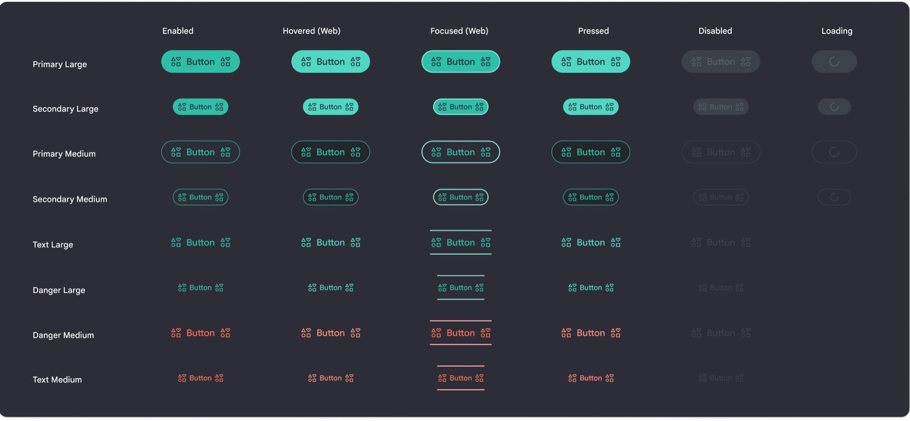
Forms
Single-line and multiline fields share labels, helper text and validation feedback. The visual states show resting, hover, focus, populated, error and disabled treatments across both themes.
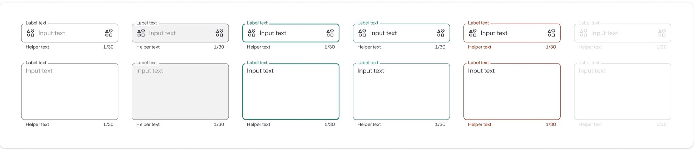
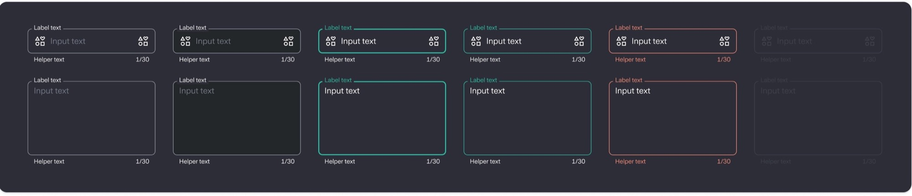
In Flutter: controllers, validators, keyboard types and focus handling connect the visual component to real forms. Small inputs have a minimum height of 48 px. Validation text accompanies the error border so feedback has a written explanation.
Finding & choosing
Search fields and expandable result menus use the same visual language as the form components. Open and closed menus, focus styling, clear actions and disabled treatments are part of the specification.
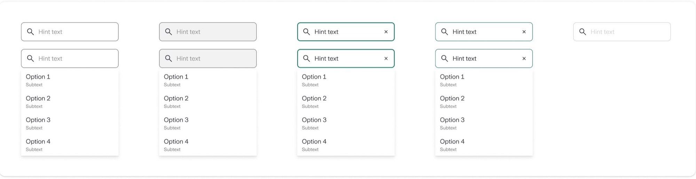
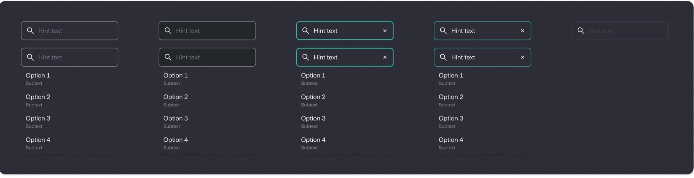
In Flutter: LDSDropdownSearch exposes labels,
helper text, a focus node and a selection callback. Its documented keyboard behaviour supports up and down
navigation through results while skipping disabled items.
Selection controls
Checkboxes, radio buttons and switches cover selected and unselected values, focus and hover feedback, disabled states and error treatments where applicable. Labelled variants place the control in the context of an actual choice.
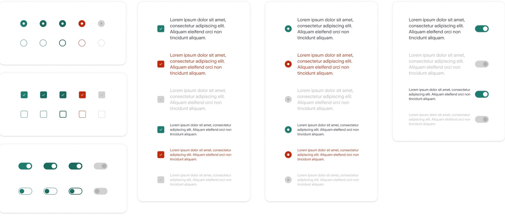
In Flutter: checkbox and radio controls wrap a 24 px visual
element in 12 px padding on each side, giving a 48 × 48 px outer interaction area. Focus borders and
Semantics properties expose interaction and selection state.
Reusable patterns
Leading icons, headlines, supporting text and trailing content form reusable rows. The examples include a default row, a disabled treatment, status actions and richer supporting information.
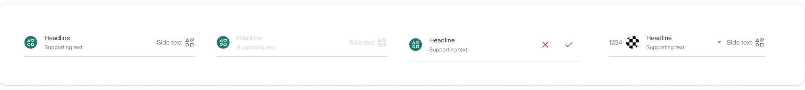
Composition
Cards combine typography, icons, imagery, status and actions into larger product patterns. The library includes image cards, status cards, progress and goal cards, and selectable content, all grounded in shared spacing, radius and theme values.
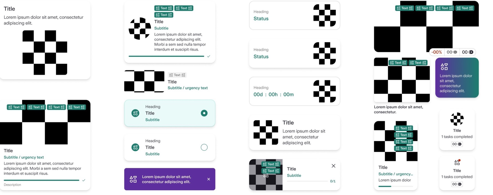
Accessibility in implementation
I considered target size, focus, semantics and colour roles as part of component development. These implementation details make those decisions visible in code.
Small inputs use a 48 px minimum height. Selection controls add padding around the visible shape, and buttons use padded Material tap targets.
Selection controls define focus borders and expose checked or toggled values through Flutter semantics. Search menus support keyboard traversal, including disabled-item handling.
Shared foreground, surface and semantic palettes define colours for each theme. Selected controls also change their shape or mark, and form errors include text alongside colour feedback.
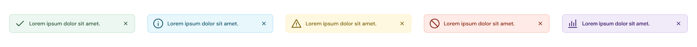
Documentation & verification
API documentation and a reference app make variants and states discoverable. The library’s widget tests cover rendering and interactions, including button callbacks.
In the product
The system became a shared foundation for LiveWell’s product work. Common components and themes gave teams a consistent starting point for features and helped move existing screens towards the same visual language.
Owning the Flutter implementation while working on the app let me address the details that surface during adoption: component boundaries, state handling and where a reusable pattern needs flexibility.
A useful Design System evolves through use. Clear APIs, examples and close collaboration with design matter as much as the component collection itself.
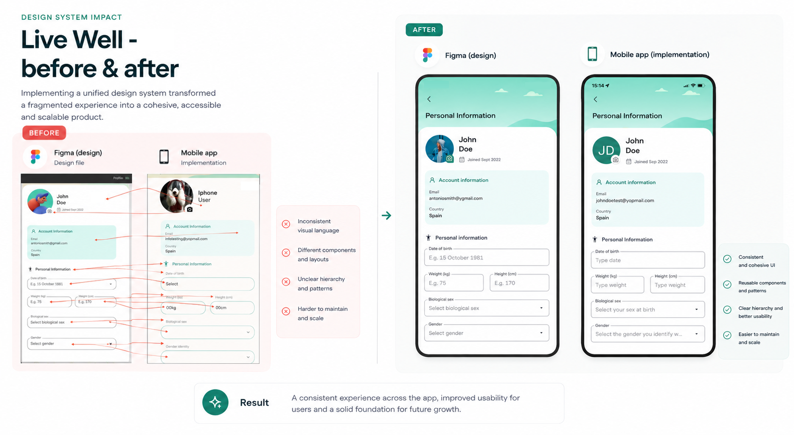
More of my work
The next challenge was a shared foundation for a multi-app ecosystem at Zurich Global Ventures.
Explore Zurich Global VenturesBack to Design Systems Explore LiveWell product development